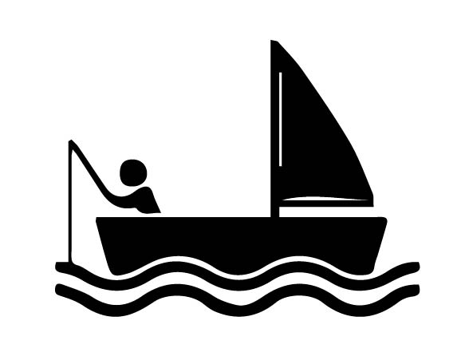
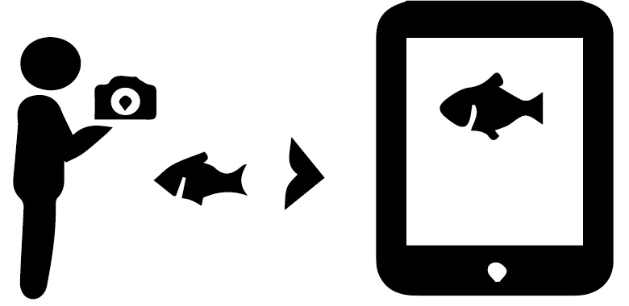
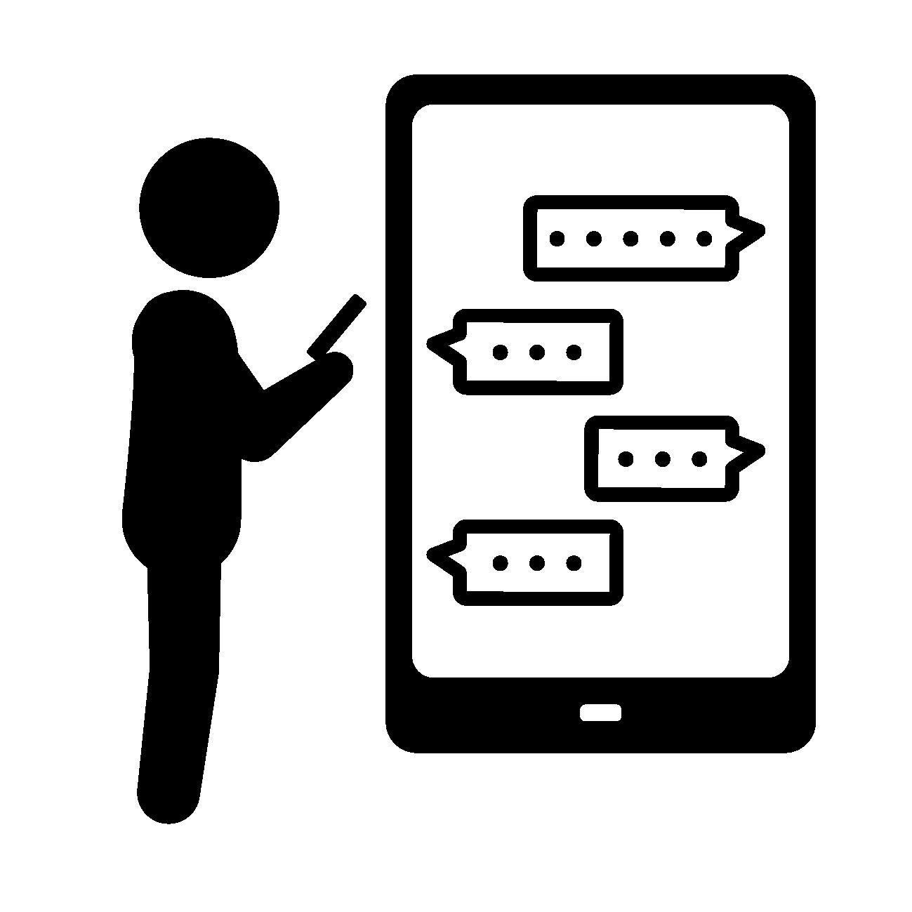
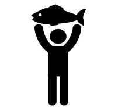

| 釣り人 |
|---|
１．魚を釣る  まずは魚を釣りましょう。 |
２．出品する  魚が釣れたら写真を撮り出品しましょう。 |
３．公開DMでやりとりする  出品画面に飲食店から魚に関する質問が来ますので、回答しましょう。 |
４．個別DMで条件交渉する 魚の詳細情報や配達場所・時間など個別の情報を調整しましょう。 |
５．販売先を決定する 購入希望者一覧から、配達しやすい相手を選び販売先を決定しましょう。 |
６．釣魚を持参する  ※宅配便での発送も可 |
７．検品をする 釣魚を確認してもらったあとに、購入者に「受取完了ボタン」を押してもらいましょう。ここで本決済が完了します。 |
８．飲食店等を評価をする 購入者を評価して、コメントを入力しましょう。次の取引の生かすことが出来ます。 |
サービス内容（取引の流れ）
Service
釣り人が釣った朝獲れ魚を、
欲しい飲食店等に売買することが出来るマッチングサービスです。
働き方改革で余暇時間が増える中、趣味を実益に替える手段としてご活用ください。